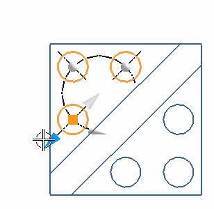

PMI 中心标记
使用 PMI 中心标记  命令来在您的模型中创建3D 中心标记，中心标记可以帮助您捕捉设计信息，它们也可以作为补充几何体，其它 PMI 对象可以附着到它上面，比如基准符号与尺寸。
命令来在您的模型中创建3D 中心标记，中心标记可以帮助您捕捉设计信息，它们也可以作为补充几何体，其它 PMI 对象可以附着到它上面，比如基准符号与尺寸。
默认中心标记显示 |
显示为一点的中心标记 |
选择单独设置延伸可以交互控制单个中心标记延伸脚的长度。

位于何处？
|
应用模块 |
PMI |
|
工具条 |
PMI→补充几何体下拉菜单→PMI 中心标记 |
|
菜单 |
产品制造信息→补充几何体→中心标记 |